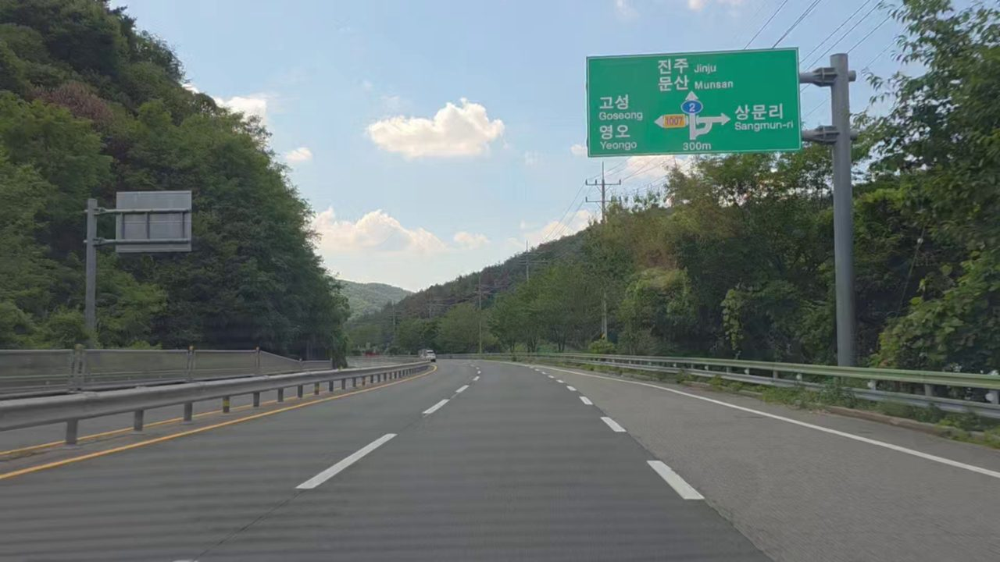

STEP 1
영상에서 사진 추출
주행 영상에서 약 4.6m마다 한 장씩 사진을 뽑고, 사진마다 촬영 위치를 붙입니다.
마모된 차선은 비 오는 밤처럼 시야가 나쁠 때 특히 잘 보이지 않습니다. MapWear는 차선 상태를 같은 기준의 숫자로 바꿔, 어디부터 손봐야 할지 한눈에 보이게 합니다.
사람마다 판단이 달라, 여러 구간을 같은 기준으로 비교하기 어렵습니다.
차량에 단 카메라 영상만으로 긴 도로를 한 번에 살펴봅니다.
20m마다 0~100점과 등급을 매겨 지도와 데이터 파일로 제공합니다.
여섯 단계를 거쳐 차선 한 줄 한 줄의 상태를 숫자로 바꿉니다.

주행 영상에서 약 4.6m마다 한 장씩 사진을 뽑고, 사진마다 촬영 위치를 붙입니다.
사진 속 차선이 어디에 있는지 AI가 찾아냅니다. 차선 한 줄마다 따로 구분합니다.
비스듬히 찍힌 도로를 위에서 내려다본 모습으로 펴서, 실제 거리 기준으로 잴 수 있게 합니다.
차선이 있어야 할 자리와 실제로 남은 도색을 겹쳐, 얼마나 지워졌는지 비교합니다.
4개 지표를 합쳐 0~100점의 LCS를 매기고, 양호·주의·위험 세 등급으로 나눕니다.
사진의 위치를 도로를 따라 이어, 20m 구간마다 등급 색으로 지도에 표시합니다.
"얼마나 남았나"만 보지 않습니다. 끊김, 노면과의 구분, 밝기까지 함께 봅니다.
원래 칠해져 있어야 할 면적 중 실제로 남아 있는 비율
차선이 끊기지 않고 이어진 정도
노면과 얼마나 뚜렷하게 구분되는지
차선 자체가 얼마나 밝게 보이는지
LCS = 면적 유지율 × 0.40
+ 연속성 × 0.25
+ 명암비 × 0.20
+ 밝기 × 0.15
구간 하나(20m)에 사진이 여러 장 들어갑니다. 지표마다 사진들의 중앙값을 써서, 한 장이 흔들려도 점수가 튀지 않게 합니다.
지도에서 구간을 선택하면 LCS와 4개 지표, 촬영 정보를 볼 수 있습니다.
대시보드 열기 →